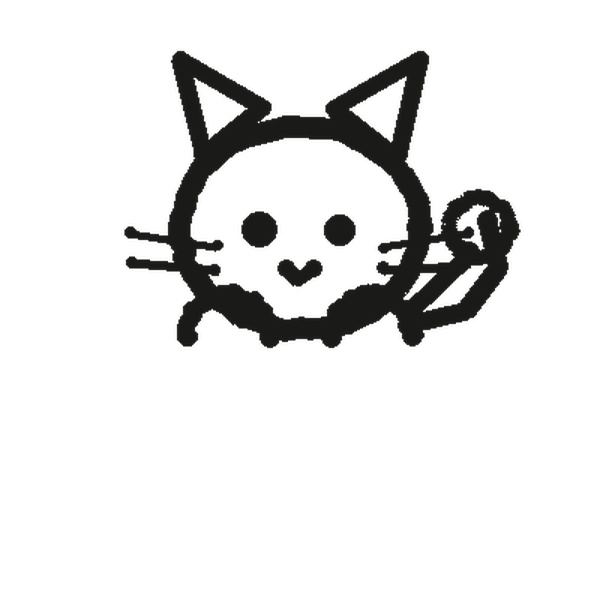
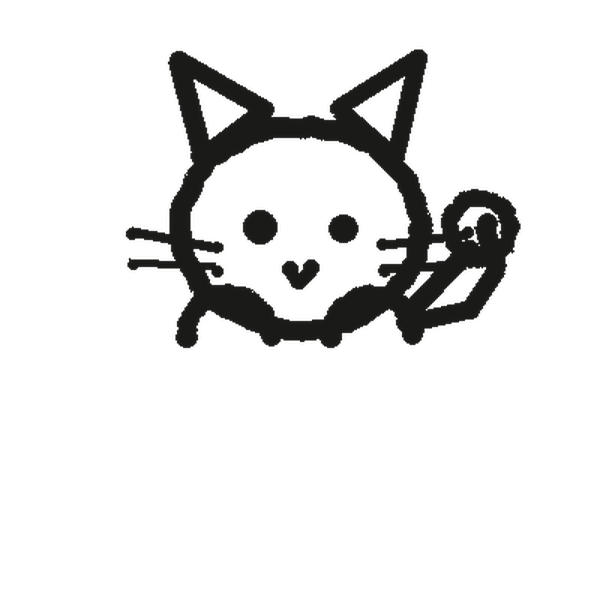
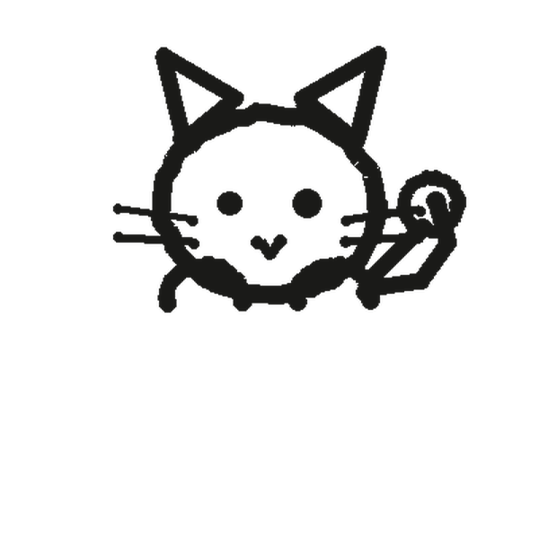
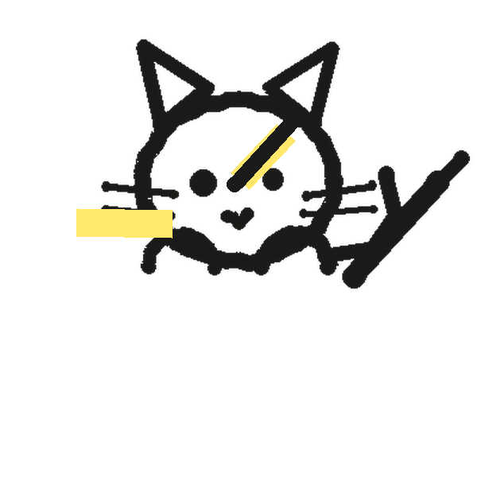
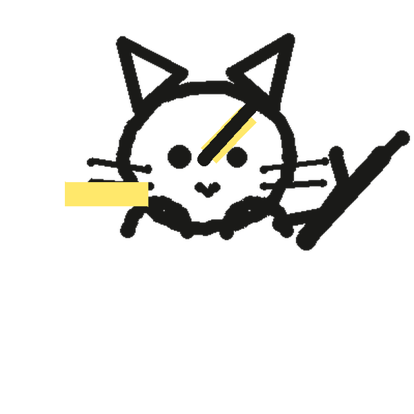
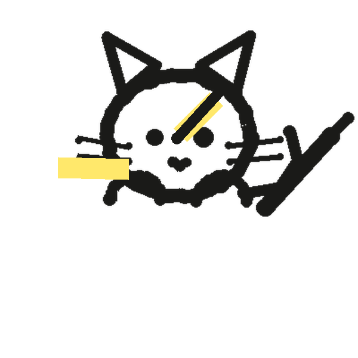

本地优先 · 无账号无广告
装好就刷，不注册、不看广告、没会员。题库、错题、进度全在你自己设备里。
2026 年 6 月动工 · 开源免费 · 无广告 · 无会员 · 无账号
题库文档导入即刷
本地优先的 AI 备考刷题工具 —— 题库自己建 · 数据自己管 · AI 讲透 · 算法记住。
别的软件收会员费 这里 免费
完全免费 · 免账号 · v1.28.1。arm64 版 20.4 MB，2017 年后的手机基本都装它；机型不确定就下通用版（34.7 MB）。 刷题、统计完全离线可用；DOCX / PDF 导入和 AI 讲解需要配你自己的 API Key。
下不动？走 GitHub Releases 兜底 · 查看源码



吉祥物 · 墨墨（它一直在抖）
导入题库 → 自动切题入库 → 开刷看解析，全流程走一遭。
演示录屏 · 从一份题库文档到开刷的全过程
9 张便签，说清楚猫卷能干什么。
装好就刷，不注册、不看广告、没会员。题库、错题、进度全在你自己设备里。
题库文档丢进去，自动切题入库；PDF 插图随题保留，JSON 直接入库。
按「题眼破题法」拆题，哪句没懂接着问 —— 用你自己的 API Key 直连。
定向爆破 / 顺序 / 随机 / 错题，想快刷还是专攻薄弱点，随你挑。
答错自动进错题本，按遗忘曲线排下次复习，到点只刷该刷的。
刷题量、正确率、连续打卡一屏看全，年度坚持热力图把努力画出来。
细笔 / 普通笔 / 荧光笔直接在题上圈重点、写推导，按题保存不丢。
同一 Wi-Fi 下手机平板自动对上，题库和进度互相同步，不走云端。
一键导出备份；设个口令，整个文件 AES-256-GCM 加密，换机也安心。
从装好到做第一道题，就这三步。
Windows 双击安装包（绿色版解压即用）；Android 装个 APK，装好就能开。
DOCX / PDF / JSON 直接丢进去；想先试试，就一键导入示例题库。
选题库、选模式，开刷。答错的自动进错题本，FSRS 替你把复习排好。
真机实拍，非示意图。


以上四张都是真机实拍 —— 你装上看到的，就是这些页面。
猫卷用你自己的 Key（BYOK）直连模型服务商 —— 先看这两张对照便签。



Key 存在你自己设备里
—— AES-256-GCM 加密存储（Android 优先放系统 Keystore），AI 请求用它直连模型服务商，不经过我们的服务器。
兼容任意 OpenAI 兼容接口：默认适配 DeepSeek，通义 / 智谱 / Kimi / OpenAI / OpenRouter 都行。
完全免费。无账号、无会员、无广告、无内购 —— 下载下来就是你的，随便用。
全在本地。题库、错题、批注、复习进度都存在设备的本地数据库里，离线可用，卸载即彻底删除。
备份是你自己导出的文件，不存在别人服务器上；AI 请求也是用你的 Key 直连模型服务商，不经过我们。
蓝屏上先点「更多信息」，再点「仍要运行」。
这是安装包暂未购买代码签名证书的未签名提示，不是「有问题」。不放心就先核对 SHA-256 再装（见下一条），并只从本页或 GitHub Releases 下载。
每个 Release 都附 SHA256SUMS.txt。Windows 开 PowerShell，把文件名换成你实际下载的那个：
# 把文件名换成你实际下载的那个
Get-FileHash .\MaoJuan-v1.28.1-windows-setup.exe -Algorithm SHA256
把输出的 Hash 与 SHA256SUMS.txt 里对应行对比，一致就说明文件完整、没被动手脚。Android 用任意哈希校验工具算 APK 的 SHA-256，同样跟 -android-arm64.apk 那一行对比。
能。Android 6.0 及以上（minSdk 23）装 APK 就行。2017 年后的手机基本都装 arm64 版（20.4 MB）；不确定机型就下通用版（34.7 MB）。
开源，协议是 AGPL-3.0：自由使用、修改、分发（含商用），但衍生作品必须同样以 AGPL-3.0 开源。